قراءة واضحة ومبسّطة للوظائف المعلنة في مناطق المملكة الثلاث عشرة: كم عددها، وأين تتركز، وفي أي القطاعات، وبكم رواتبها.

20 صفحة، تُقلَّب من اليمين إلى اليسار. اضغط الصفحة اليسرى أو اسحب بإصبعك.
ماذا يقدّم التقرير، وأهم نتائجه، وكيف بنينا التحليل.
أين تتركز الوظائف، وكيف تتوزع مقارنة بعدد السكان.
ملف لكل منطقة كبرى، ولمحة عن بقية المناطق.
فروق الرواتب، وكثرة الوظائف، وخريطة الفرص.
الرياض ومكة المكرمة والشرقية فيها ثلاثة أرباع الوظائف المعلنة، وآخر خمس مناطق فيها 6% فقط.
بين أعلى متوسط (الشرقية) وأقل متوسط (الباحة). نوع الوظائف يفسّر أقل من ثلث هذا الفرق.
الرياض والشرقية فقط تجمعان بين وظائف كثيرة مقارنة بالسكان ورواتب أعلى من المتوسط.